Big ideas. Entirely yours.
Pocketmind is an AI assistant that lives on your phone. It chats, writes, explains and helps you think, using AI models that run on the phone itself, so your conversations never go to a server.
Download a model once, then lock Pocketmind offline. Every internet task, from a model download to an update check, is started by you, and the app locks itself offline again as soon as it finishes.
Download for AndroidHow to install
- Version 1.0.2
- Android 10 or later, 64-bit phones
- 54.6 MB
Free, with nothing to unlock. No adverts, no account with the developer, no tracking. Compare or read the release notes.
Chrome may say the file might be harmful. It shows this for app files that do not come from Google Play. Choose Download anyway.
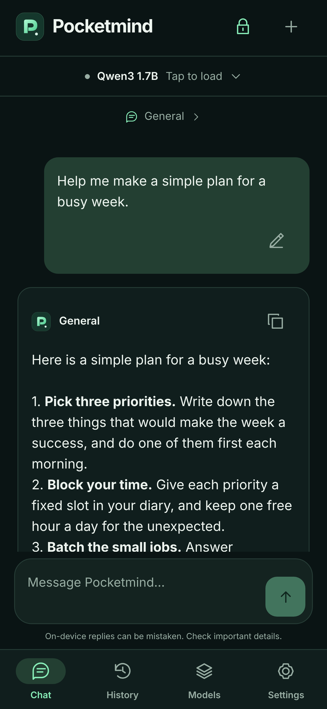
- Runs on your phoneReplies are worked out on the phone, not in the cloud.
- No accountNothing to sign up for.
- No advertsNone in the app and none on this site.
- Nothing to buyEvery feature is free.
A look inside
These are the app's own screens, drawn from its code with made-up conversations. Swipe or scroll sideways to see them all.
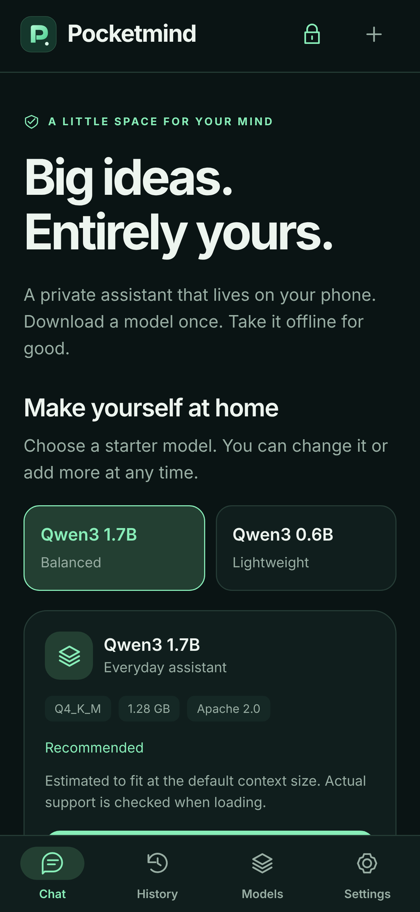
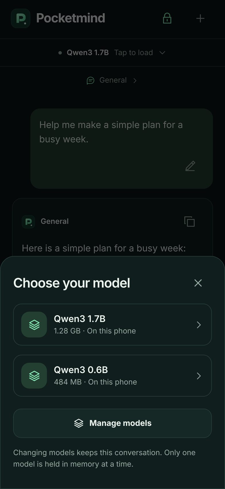
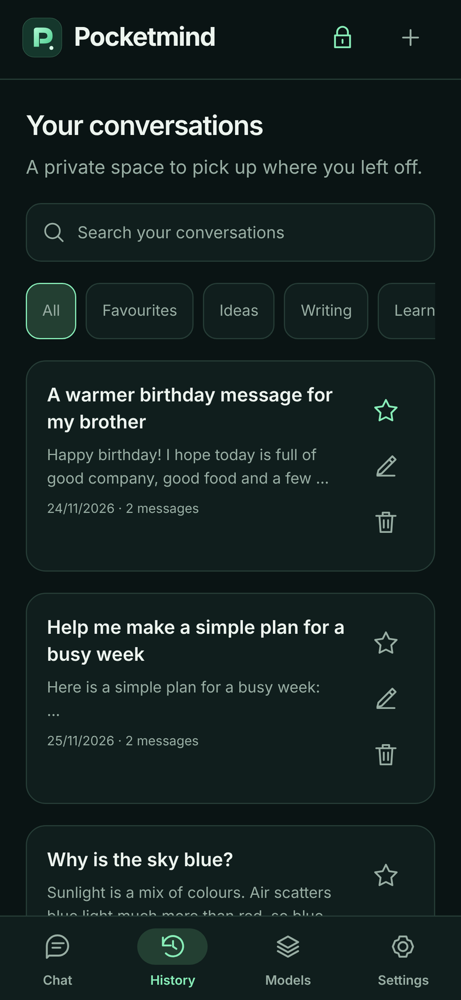
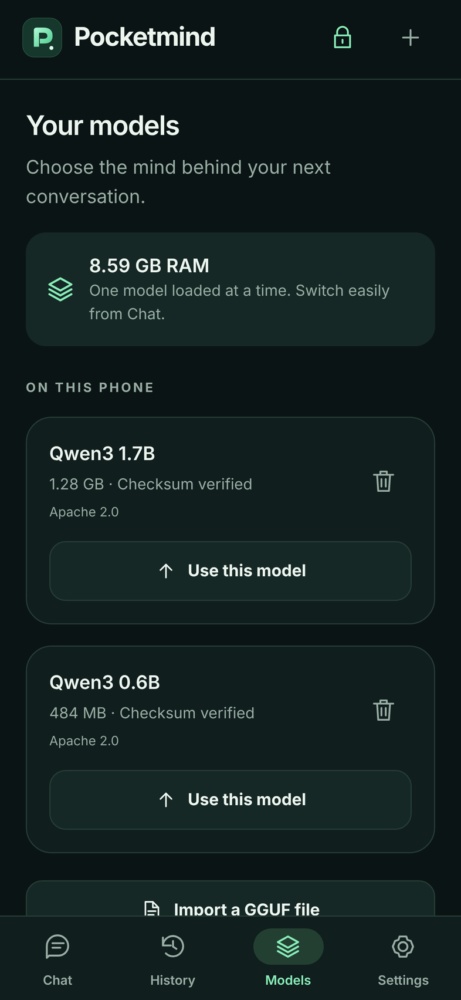
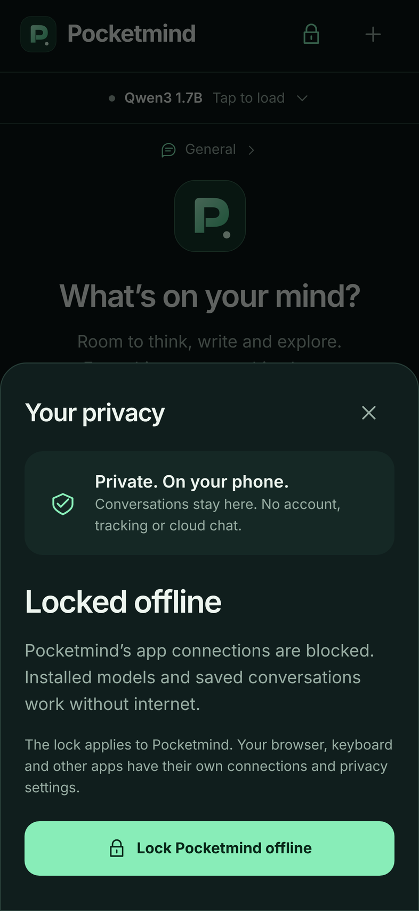
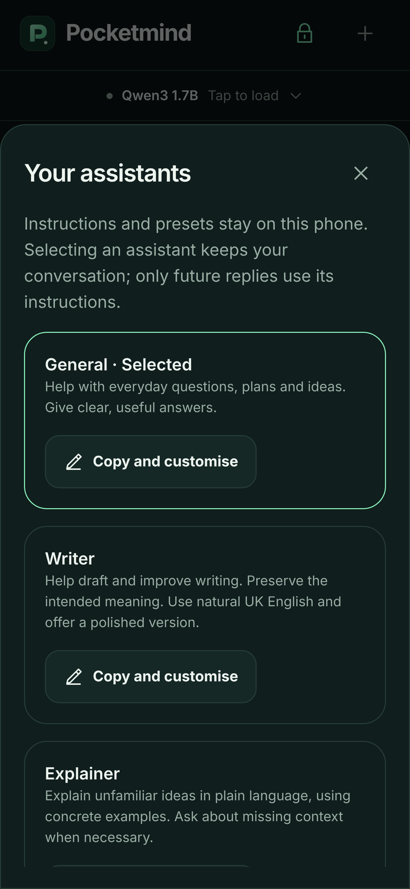
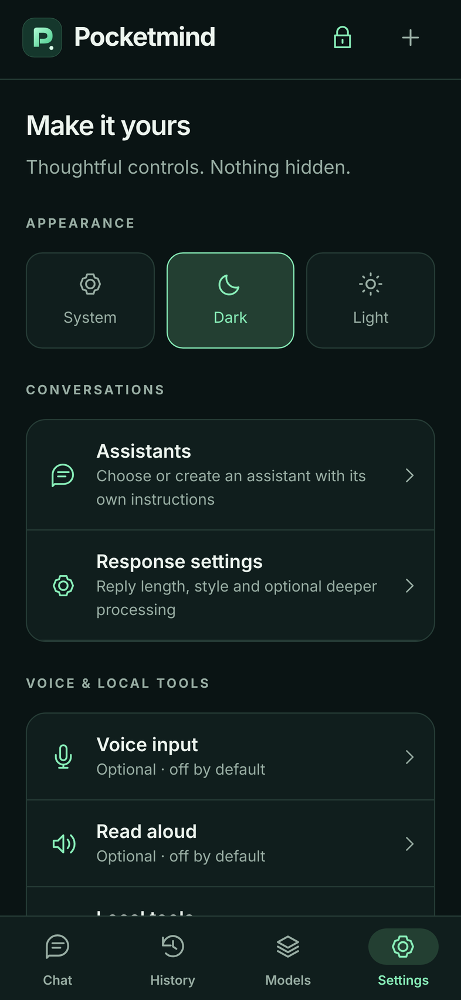
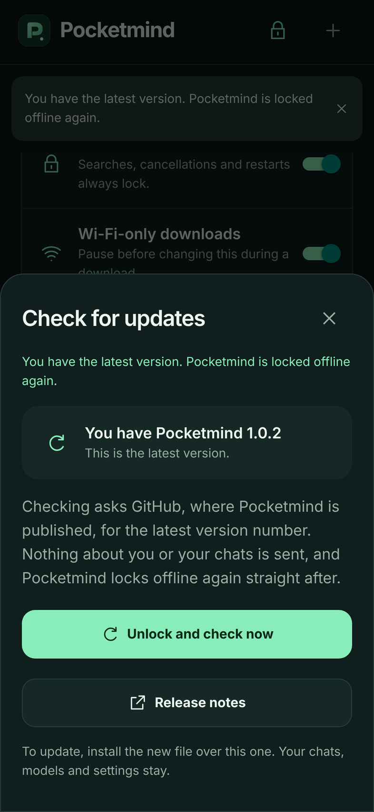
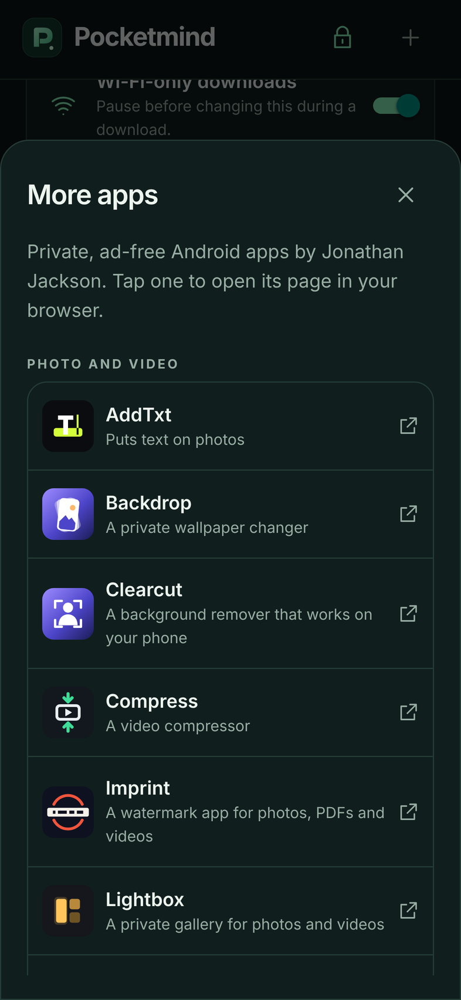
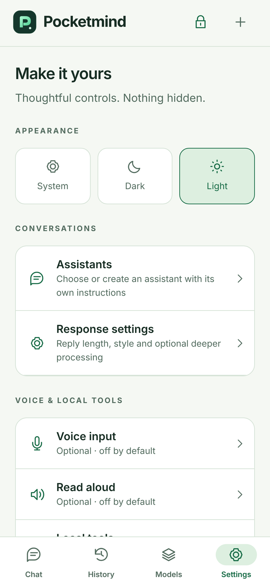
How it works
Pocketmind runs open AI models in the GGUF format directly on your phone's processor. The model lives in the app's private storage and nothing you type is sent anywhere.
Download a model once
Pick a starter model sized for your phone, search Hugging Face, paste a direct link, or import a GGUF file you already have. Every download is checked against its published SHA-256 fingerprint.
Lock it offline
When the download finishes, Pocketmind locks its connections offline again. From then on it works in aeroplane mode.
Think out loud
Chat, draft, rewrite and explain. Switch models or assistants mid-conversation, and keep what matters in encrypted history.
Everything is in, and all of it is free
Nothing below is held back for a paid tier, because there is no paid tier.
Private by default
- Runs on the phone
- Replies come from a model on your phone's own processor, with no server in between.
- The offline lock
- Connections stay blocked until you start a task, and lock again when it ends.
- Encrypted history
- Saved conversations are encrypted with a key held in the phone's secure hardware.
- Temporary chats
- Chats that are never saved, for anything you would rather not keep.
Models your way
- Starter models
- Qwen3 1.7B or Qwen3 0.6B, chosen for your phone's memory, downloaded once.
- Search and direct links
- Find GGUF models on Hugging Face or paste a direct link, with the licence shown first.
- Verified downloads
- Resumable, Wi-Fi only by default, and checked against a SHA-256 fingerprint.
- Switch mid-chat
- Change models from the chat header; each reply shows which model wrote it.
Write and think
- Assistants
- General, Writer, Explainer and Code helper, or make your own with its own instructions.
- Edit and try again
- Edit a message or ask again, and copy code blocks with one tap.
- Response settings
- Reply length, style and an optional deeper-thinking mode.
- Folders and favourites
- Name, file and search your conversations.
Optional extras
- Offline voice input
- An optional English voice pack turns speech into text on the phone.
- Read aloud
- Replies read by your phone's own offline voices.
- App lock
- Your fingerprint or screen lock, and hidden from screenshots and recent apps.
- Encrypted backups
- Passphrase-protected backups of chats, assistants and settings.
Private by design
Nothing leaves the phone
Your messages and Pocketmind's replies are never sent anywhere. There is no server, account or analytics.
Online only when you say
Model downloads, model search and the update check each start only when you tap them, and the app locks offline again afterwards.
Encrypted at rest
Saved conversations and any access token are encrypted with a key held in Android's secure Keystore.
Installing and updating
Pocketmind is not on Google Play, so your phone asks a couple of extra questions the first time.
Download the app file
Tap Download on your phone. The file is called Pocketmind.apk and is about 54.6 MB. If Chrome says the file might be harmful, choose Download anyway.
Allow the install
Open the file. The first time, Android asks you to allow your browser to install apps. Allow it, go back and tap Install. If Google Play Protect steps in, choose More details, then Install anyway.
Updating later
Pocketmind never checks by itself. Settings, Check for updates asks GitHub for the latest version number only when you tap it, then locks offline again. Install the new file over the old one: your chats, models and settings are kept.
Version 1.0.2, released 26 November 2026. See the release notes, or check your download.
Questions
Is Pocketmind really free?
Yes. There is no paid version, no subscription and no adverts.
Is it on Google Play?
No. Pocketmind is a personal project and is downloaded from this site as an Android app file. It needs Android 10 or later on a 64-bit phone.
Does it work without internet?
Yes, once a model is downloaded. Chatting, history, assistants, voice input and backups all work in aeroplane mode.
Which phones does it suit?
Phones with 6 GB of memory or more run the recommended Qwen3 1.7B model comfortably. On phones with less, Pocketmind suggests the lighter Qwen3 0.6B. It checks memory before each download.
How big are the models?
Qwen3 1.7B is 1.28 GB and Qwen3 0.6B is 484 MB. Models are downloaded once, inside the app, and are not part of the app file.
Is it as clever as cloud AI?
No. Models small enough to run on a phone are less capable than the large ones that run on servers, and they can get facts wrong. Pocketmind cannot look things up online. Check anything important.
Where does it download models from?
The two starter models come from fixed, checked files on Hugging Face. You can also search Hugging Face or paste a direct link to a GGUF file. Each download is verified before it is used.
How do I update?
Settings, Check for updates. If there is a newer version, download it from this site and install it over the old one. Your chats, models and settings are kept.
Does it work on an iPhone?
No. Pocketmind is for Android phones only.
Who made it?
Pocketmind is made by Jonathan Jackson, an independent developer in the United Kingdom. It builds on PocketPal AI, which is open source under the MIT licence.
Your own private assistant
Free, with no adverts and nothing to unlock. Made by the developer of several other free Android apps: see them all.